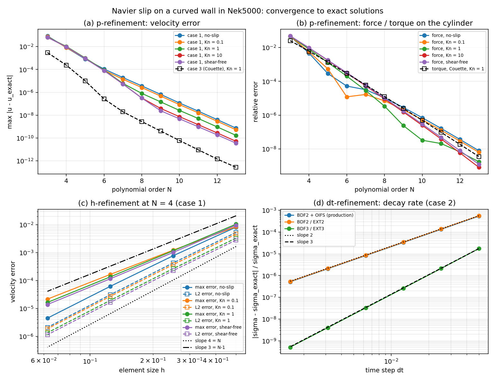
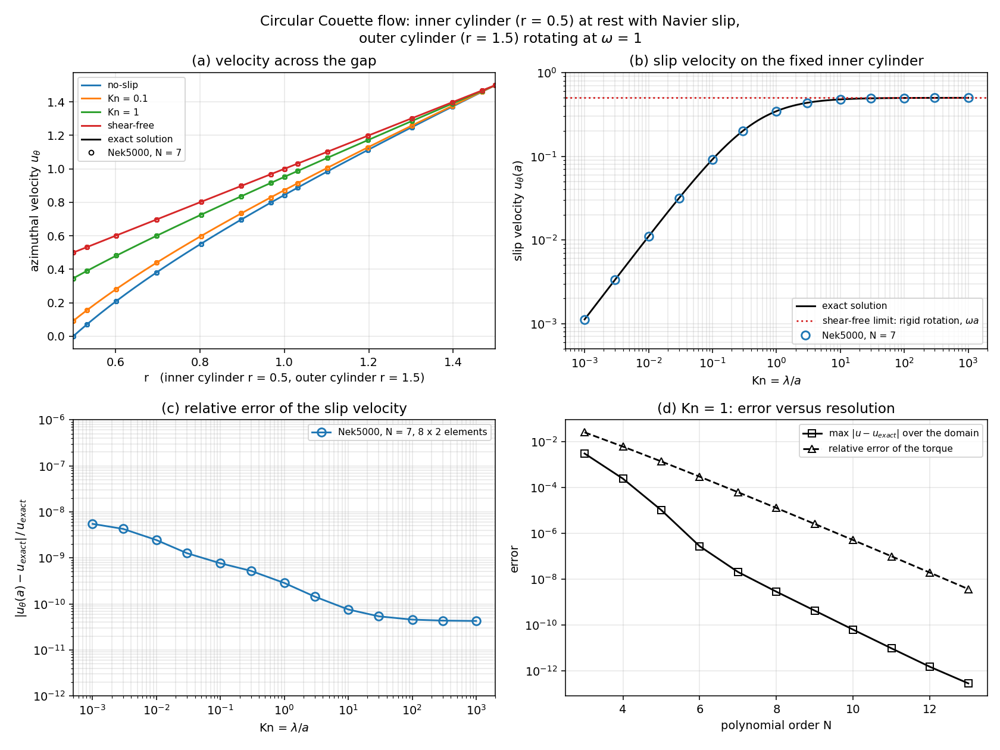
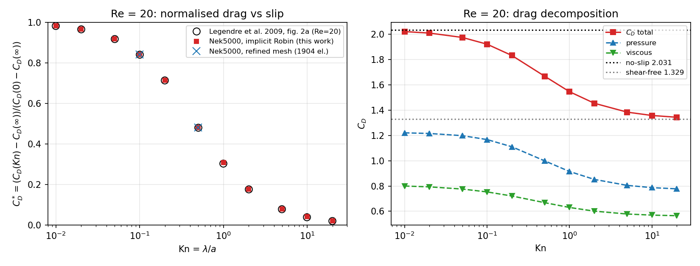
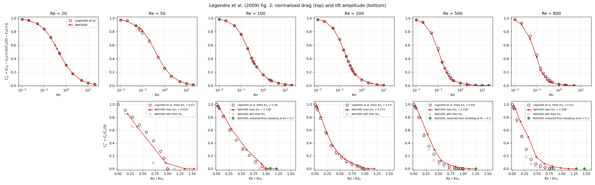
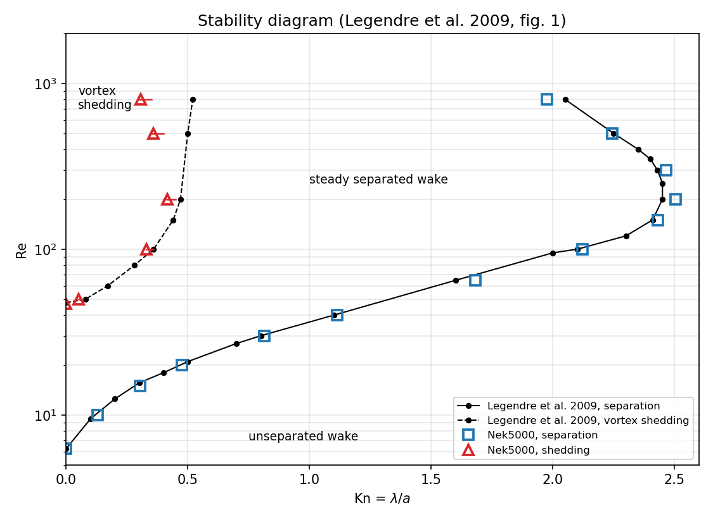
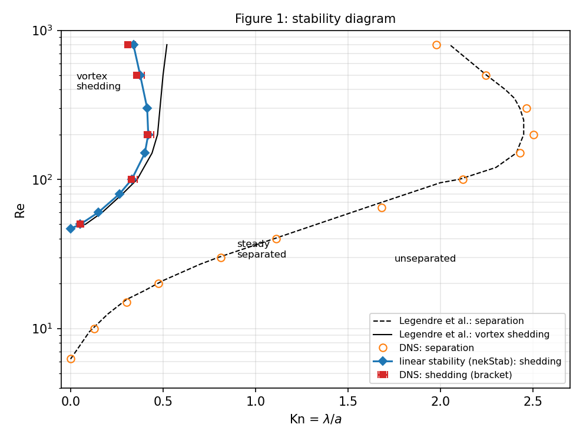
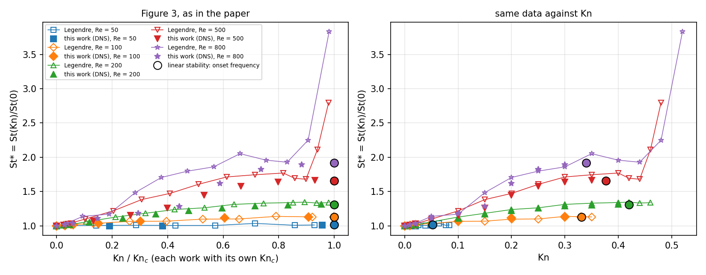
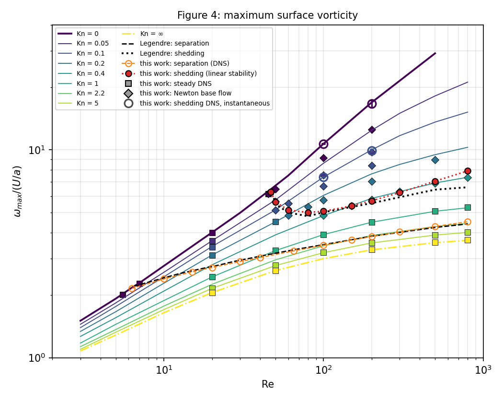
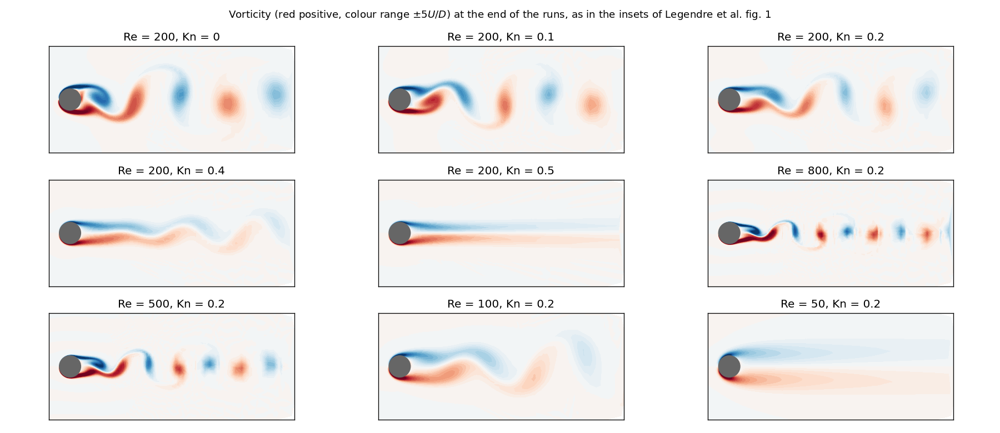
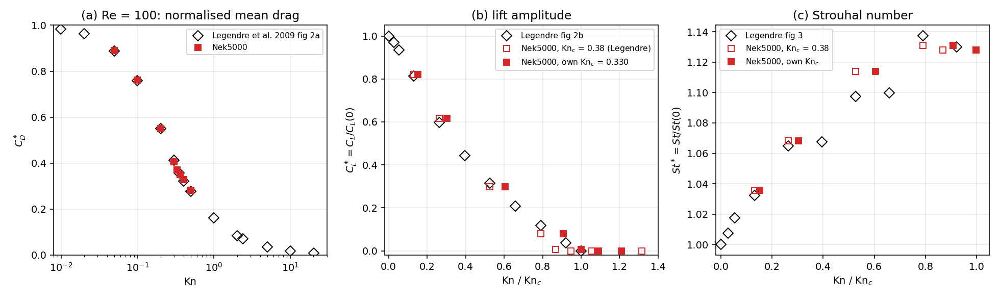

The boundary condition
On the wall, with n the unit normal pointing into the fluid and S the rate-of-strain tensor:
The slip length λ ranges from 0 (no slip) to ∞ (shear-free wall); the slip is measured by Kn = λ/a, with a the cylinder radius. On a cylinder the condition reads
The last term is the curvature term. A flat-wall formula ut = λ ∂ut/∂n leaves it out. Here it is included.
The condition is imposed in the weak form as a wall friction −(μ/λ) ut. Nek5000 already
handles zero normal velocity (the shl condition). The friction is added to the implicit velocity
operator, so a small λ does not limit the time step. Two pieces of code do this:
src/navier_slip.f, included by the case's.usrfile;- about 30 lines added to the Nek5000 core routine
core/subs1.f, applied bysrc/apply_robin_patch.py. The script does nothing if the tree is already patched.
The derivation and the implementation are explained in the cylinder case README.
How to cite
If you use this code, please cite:
F. Picella, J.-Ch. Robinet and S. Cherubini, Laminar–turbulent transition in channel flow with superhydrophobic surfaces modelled as a partial slip wall, J. Fluid Mech. 881, 462–497 (2019). doi:10.1017/jfm.2019.740
BibTeX
@article{Picella2019,
author = {Picella, Francesco and Robinet, Jean-Christophe and Cherubini, Stefania},
title = {Laminar--turbulent transition in channel flow with superhydrophobic
surfaces modelled as a partial slip wall},
journal = {Journal of Fluid Mechanics},
volume = {881},
pages = {462--497},
year = {2019},
doi = {10.1017/jfm.2019.740}
}GitHub's "Cite this repository" button gives the same entry, from
CITATION.cff.
Quick start
git clone https://github.com/fpicella/nek5000-navier-slip.git
cd nek5000-navier-slip/cylinder2d
./build.sh /path/to/Nek5000 # patches core/subs1.f once, then makenek
./run.sh 4 # Re = 20, Kn = 0.1; about 10 minutes on 4 coresThe run stops by itself at steady state. The last line of cyl_drag.dat should give
Cd = 1.9201. Tested with Nek5000 master (commit ff73775, August 2026), gfortran and OpenMPI. One core
routine gets patched, so use a Nek5000 clone that you keep for slip cases only.
Verification against exact solutions
The test domain is an annulus 0.5 < r < 1.5 with slip on the inner cylinder. It has four exact solutions:
- Stokes flow past the cylinder, where the slip velocity varies along the wall;
- a decaying azimuthal Navier–Stokes mode, to check time accuracy;
- circular Couette flow, whose solution contains the curvature term;
- axial Couette flow (3D).


Comparison with Legendre, Lauga & Magnaudet (2009)
D. Legendre, E. Lauga and J. Magnaudet, Influence of slip on the dynamics of two-dimensional wakes, J. Fluid Mech. 633, 437–447 (2009). We ran 122 simulations of the 2D cylinder from Re = 5.5 to 800, on 1040 elements at N = 7. The two Re = 800 checks used a refined mesh of 1904 elements.
Drag at Re = 20

Drag and lift, Re = 20 to 800

Stability diagram: separation and vortex shedding

Open discrepancy: the onset of vortex shedding. Our critical slip Knc, above which the wake stops shedding, is lower than theirs at every Re tested. The gap is small at Re = 100 and grows to 40 % at Re = 800.
| Re | 50 | 100 | 200 | 500 | 800 |
|---|---|---|---|---|---|
| Knc, this code | 0.052 | 0.33 | 0.42 | 0.36 | 0.31 |
| Knc, Legendre et al. | 0.08 | 0.36 | 0.47 | 0.50 | 0.52 |
What we checked:
- Hysteresis. None: runs restarted from a shedding state at Kn = 0.3 stop shedding above our Knc, just like runs started from rest.
- Mesh. The Re = 800 result does not change on the refined mesh.
- Linear stability. A separate linear stability analysis (nekStab) finds the same thresholds as our simulations (next figure).
Their no-slip Cd, CL and St at Re ≥ 500 are 4–18 % below ours. That may point to resolution on their
side, but we have not settled it. Run-by-run numbers are in
legendre_campaign.txt.

Strouhal number and surface vorticity


Wakes


What is not in the repository
- The raw time series of the Legendre campaign (about 120 MB of
cyl_drag.dat) and the flow fields. The summary tables and the figures are included. - The linear stability (nekStab) results.
- The extended
.usrfile that wrote the wall diagnostics during the campaign. The publiccyl.usrgives Cd, CL, St and the shedding threshold. It does not give the separation boundary.
The verification figures can be remade from the summary data shipped in verification/data/.
See the READMEs in verification/ and legendre2009/.